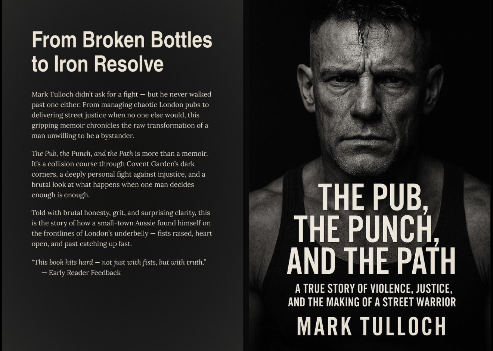
The Pub, The Punch, and The Path
A story of hospitality, hard lessons and personal transformation.
Conscious Systems · Awaken. Align. Evolve.
Make sense of where you are. Reconnect with what matters. Build a life that feels like your own.
Personal transformation · Books · Original music
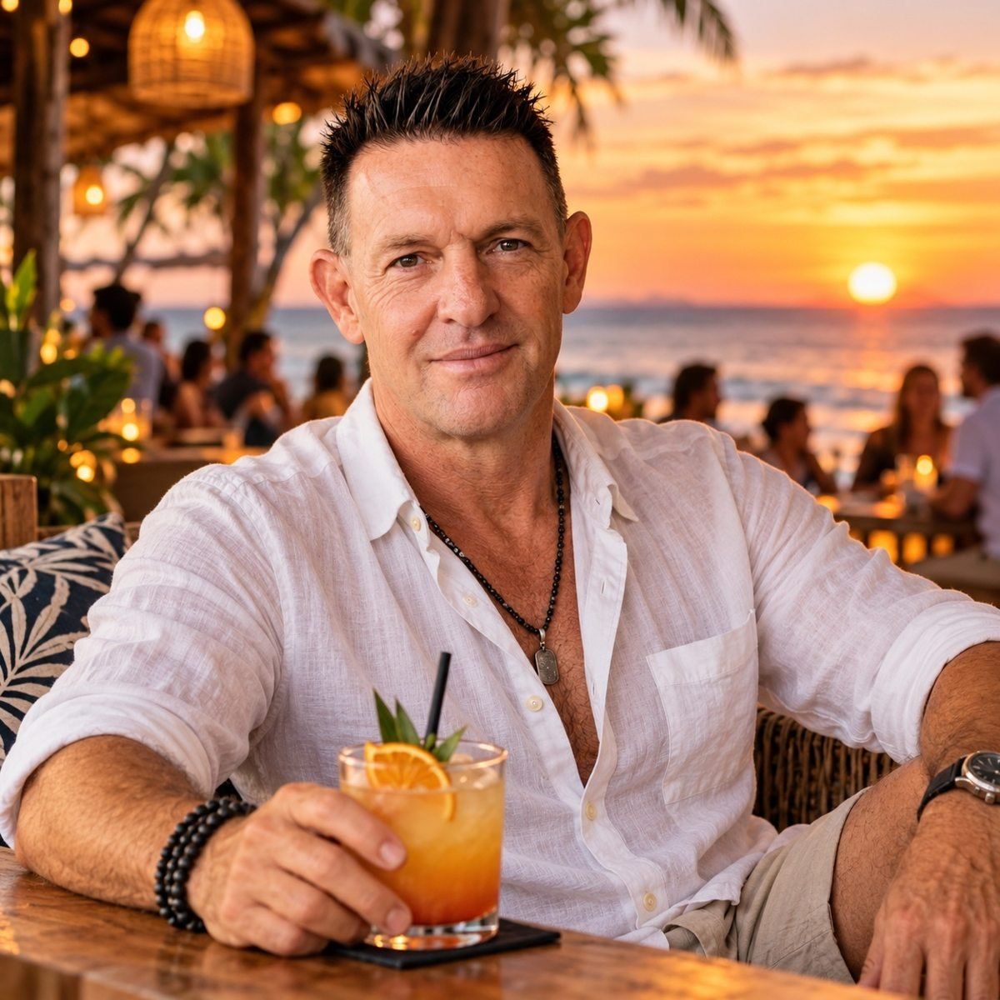
01 / Mark’s story
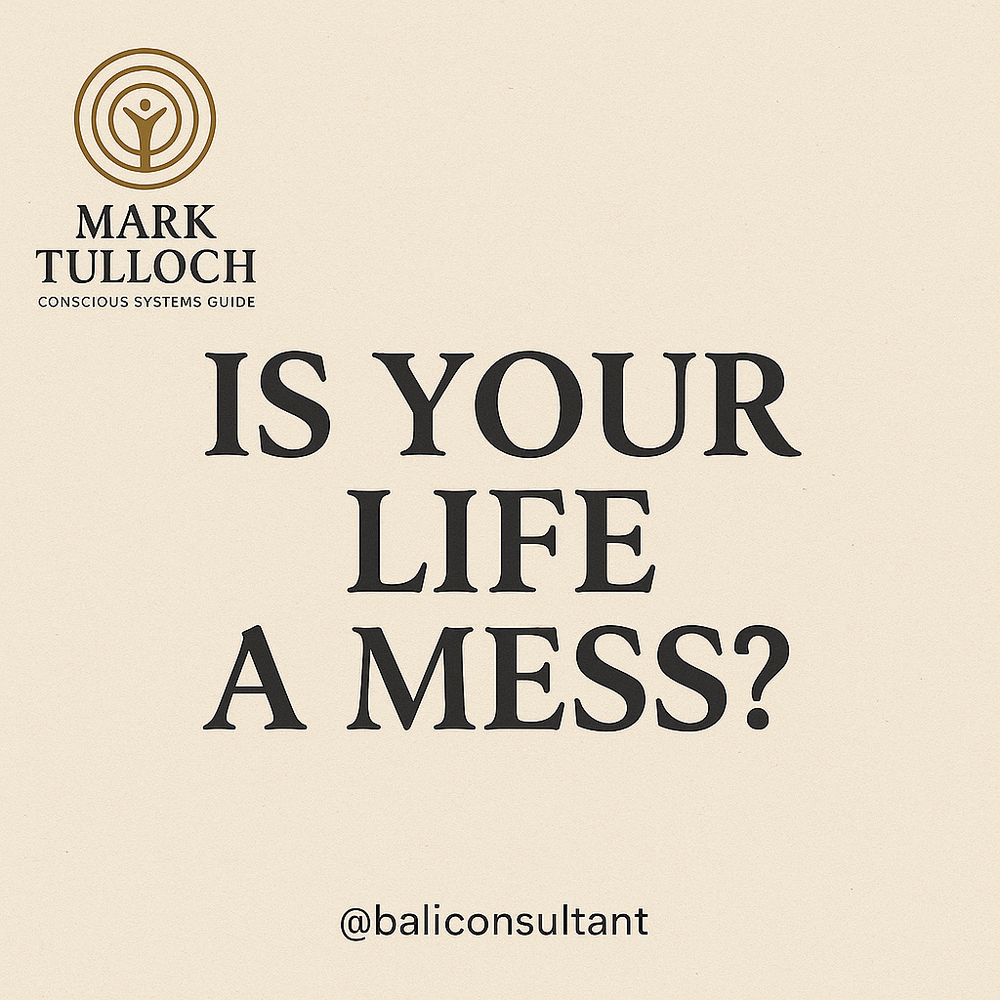
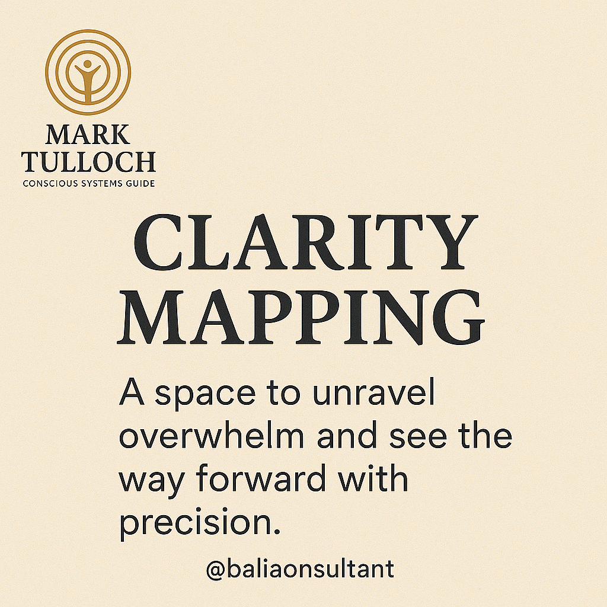
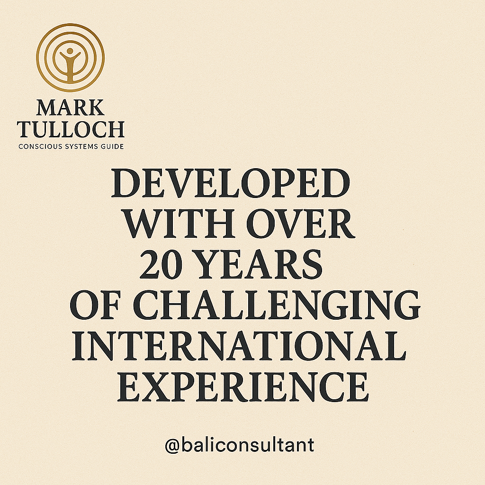
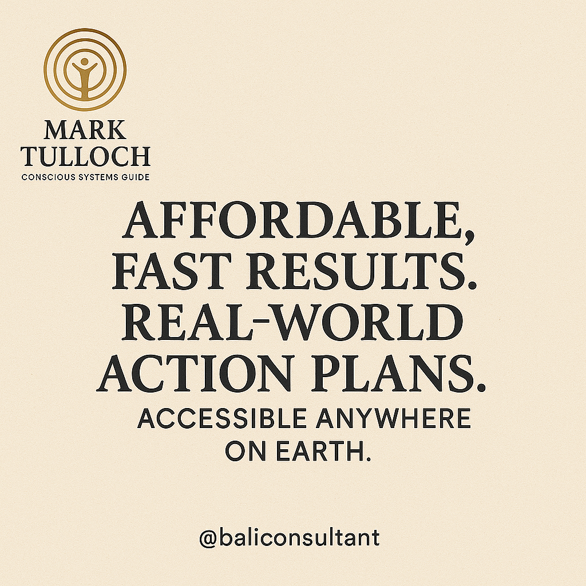
Mark Tulloch’s story runs from the pressure of London hospitality to a quieter kind of rebuilding in Bali. Behind years of leadership and outward success was a personal struggle with Bipolar I.
Rebuilding meant learning to recognise patterns, create space for stillness and find a more sustainable way to live. Those lived lessons became Conscious Systems: a practical approach to awareness, alignment and change.
Today, Mark shares that journey through Clarity Mapping, books and music — different ways to make sense of experience and find a way forward.
“You’re not broken. You’re misaligned.”
02 / Conscious Systems
Change starts with noticing. Conscious Systems brings together reflection, lived experience and practical structures that support everyday life.
Make space to recognise what repeats, what drains you and what helps you feel grounded.
Look honestly at your priorities and choose a direction that reflects who you are.
Create simple, supportive habits. Reflect, adjust and keep moving at a pace you can sustain.
03 / Clarity Mapping
You don’t need to have everything figured out. A one-to-one Clarity Mapping session gives you space to talk through a decision, a transition or a personal crossroads.
Together, we look at where you are, what’s getting in the way and what you can influence — then identify a practical next step.

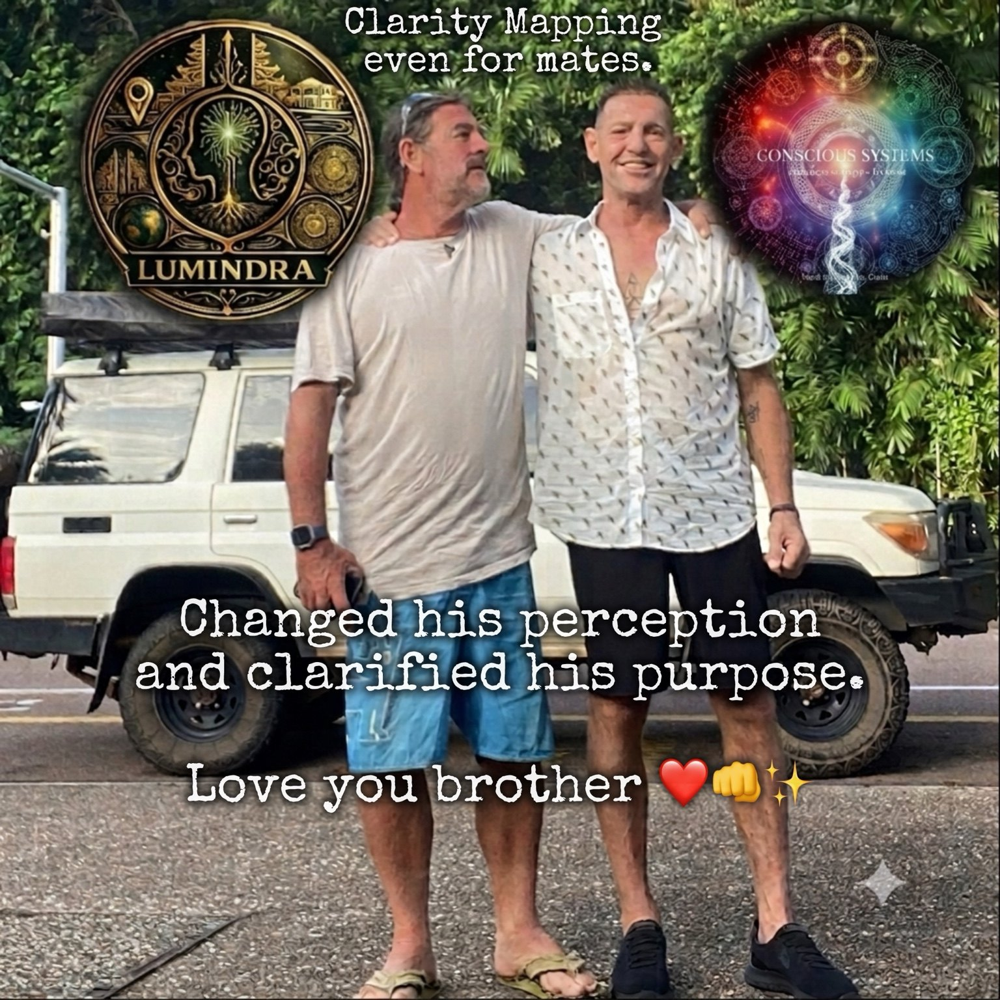
Based in Bali. Email Mark to arrange a time and discuss availability. Clarity Mapping supports personal reflection and is not a substitute for professional mental-health care.
Get in touch ↗Client reflections
A few reflections from people who have experienced Conscious Systems.
[Approved client testimonial goes here.]
[Approved client testimonial goes here.]
[Approved client testimonial goes here.]
04 / Words & sound
Stories from the hard years, reflections on rebuilding and music that gives the journey a voice.
Written by Mark Tulloch

A story of hospitality, hard lessons and personal transformation.
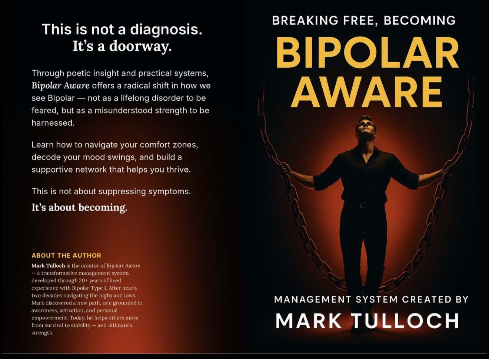
Lived experience, pattern recognition and supportive systems for everyday life.
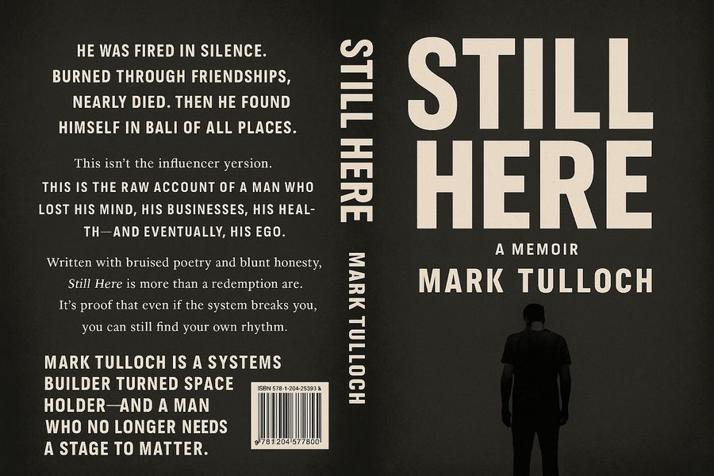
A memoir of identity, loss and finding a way forward.
Conscious Systems · Original albums
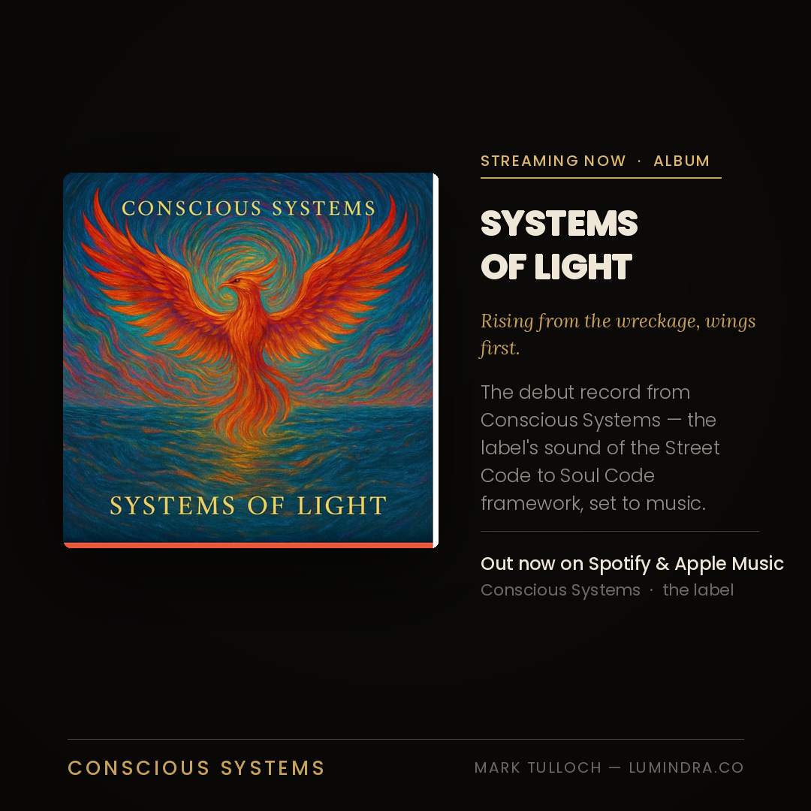
Conscious Systems
Rising from the wreckage, wings first.
Available on Spotify and Apple Music
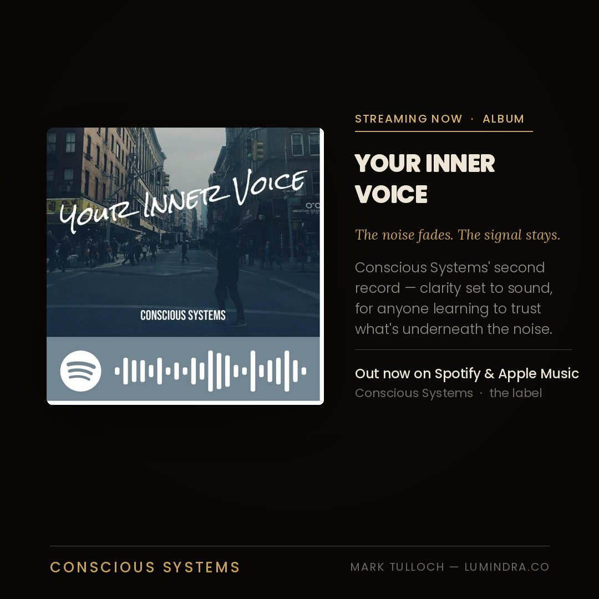
The noise fades. The signal stays.
05 / Contact & booking
Tell Mark what you’re navigating and what you’d like to clarify. Get in touch to arrange a session or ask about the books and music.
Kerobokan, Bali, Indonesia